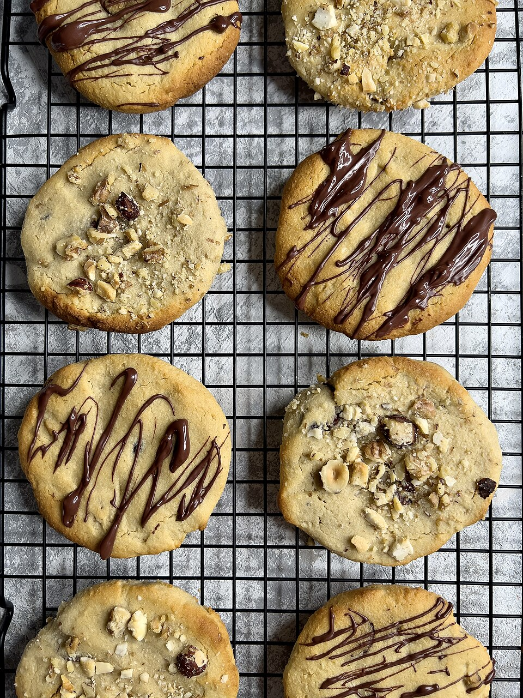

Chocolate chip cookies
Home

Description
These chocolate chip cookies are soft, chewy, and packed with delicious chocolate chips in every bite.
With golden, slightly crispy edges and a warm, gooey centre, they’re the perfect homemade treat.
Easy to make and full of flavour, these cookies are guaranteed to satisfy any sweet craving!
Ingredients
- 1 cup soft butter
- 1 cup white sugar
- 1 cup brown sugar
- 2 large eggs
- 2 teaspoons vanilla extract
- 1 teaspoon baking soda
- 2 teaspoons hot water
- ½ teaspoon of salt
- 3 cups all-purpose flour
- 2 cups semisweet chocolate chips
- 1 cup chopped walnuts
Steps
- Gather ingredients, make sure your butter is soft and your eggs are room temperature.
- Preheat your oven to 175 ℃. Beat your butter, white and brown sugar together in a large bowl until creamy.
- Add eggs, one at a time, stir until fully incorporated. Stir in the vanilla extract.
- Dissolve baking soda in hot water; add to the batter along with salt and mix until combined.
- Stir in the flour until fully incorporated. Add the chocolate chips and walnuts, mix until evenly dispersed.
- Place one and a half tablespoon portions of dough onto an ungreased baking sheet.
- Place the sheet in the oven until the edges of the cookie are slightly brown and the centre has set. About 10 minutes.
- Let the cookies cool on a wire rack.